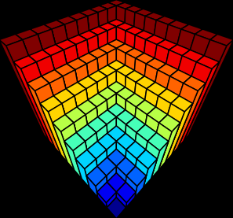

Identity
The sequence A181983(n) gives the determinants of the square matrices: \(M_{n}\), with elements \(m_{i,j}= \max(i,j)\), where \(\max\) the is the maximum function.
This identity appears as follows:
\[\begin{equation} det{\bigg[ max(i,j) \bigg] }_{1\leq i,j \leq n} = -n \cdot {(-1)}^{n} = A181983(n) \end{equation}\]
Proof
A new matrix with the same determinant can be created by subtracting row \(i\) from row \(i+1\) starting from the 2nd row. The determinant of this new matrix can then be computed easily using the expansion by minors technique at element \(m_{1,n}\)
This can be better illustrated with an example:
We can transform:
\[\begin{equation} M_{10} = \left(\begin{array}{cccccccccc} 1 & 2 & 3 & 4 & 5 & 6 & 7 & 8 & 9 & 10 \\ 2 & 2 & 3 & 4 & 5 & 6 & 7 & 8 & 9 & 10 \\ 3 & 3 & 3 & 4 & 5 & 6 & 7 & 8 & 9 & 10 \\ 4 & 4 & 4 & 4 & 5 & 6 & 7 & 8 & 9 & 10 \\ 5 & 5 & 5 & 5 & 5 & 6 & 7 & 8 & 9 & 10 \\ 6 & 6 & 6 & 6 & 6 & 6 & 7 & 8 & 9 & 10 \\ 7 & 7 & 7 & 7 & 7 & 7 & 7 & 8 & 9 & 10 \\ 8 & 8 & 8 & 8 & 8 & 8 & 8 & 8 & 9 & 10 \\ 9 & 9 & 9 & 9 & 9 & 9 & 9 & 9 & 9 & 10 \\ 10 & 10 & 10 & 10 & 10 & 10 & 10 & 10 & 10 & 10 \end{array} \right) \end{equation}\]
Into:
\[\begin{equation} M^{*}_{10} =\left(\begin{array}{cccccccccc} 1 & 2 & 3 & 4 & 5 & 6 & 7 & 8 & 9 & 10 \\ 1 & 0 & 0 & 0 & 0 & 0 & 0 & 0 & 0 & 0 \\ 1 & 1 & 0 & 0 & 0 & 0 & 0 & 0 & 0 & 0 \\ 1 & 1 & 1 & 0 & 0 & 0 & 0 & 0 & 0 & 0 \\ 1 & 1 & 1 & 1 & 0 & 0 & 0 & 0 & 0 & 0 \\ 1 & 1 & 1 & 1 & 1 & 0 & 0 & 0 & 0 & 0 \\ 1 & 1 & 1 & 1 & 1 & 1 & 0 & 0 & 0 & 0 \\ 1 & 1 & 1 & 1 & 1 & 1 & 1 & 0 & 0 & 0 \\ 1 & 1 & 1 & 1 & 1 & 1 & 1 & 1 & 0 & 0 \\ 1 & 1 & 1 & 1 & 1 & 1 & 1 & 1 & 1 & 0 \end{array} \right) \end{equation}\]
This proof can be generalized to a very similar kind of matrices, resulting in:
\[\begin{equation} det{\bigg[ max(i,j)^k \bigg]}_{1\leq i,j \leq n} = {(-1)}^{n-1} \cdot n^{k} \cdot \prod_{s=1}^{n-1}{(s+1)^k-s^k} \end{equation}\]
\[\begin{equation} det{\bigg[ min(i,j)^k \bigg]}_{1\leq i,j \leq n} = \prod_{s=1}^{n-1}{(s+1)^k-s^k} \end{equation}\]